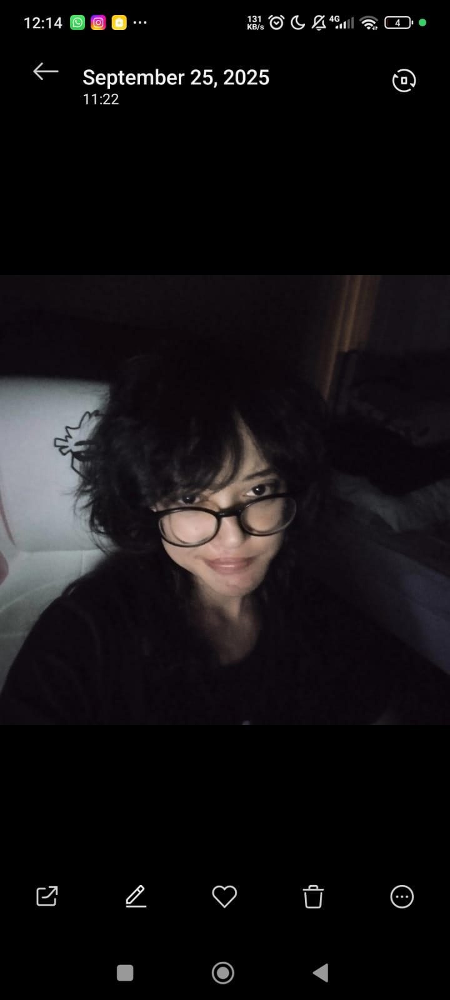

Dar direção à inteligência.
Design e teste de prompts, avaliação de LLMs, revisão de respostas, anotação de dados e análise de possíveis vieses.
LUIZA SENA / IA, CÓDIGO & CIÊNCIA
Oi, eu sou a Luiza. Transformo curiosidade em código e inteligência artificial em possibilidades. Sempre pronta para a próxima missão.

01 // PLAYER.INFO

Gosto de fazer perguntas, entender como as coisas funcionam e transformar esse aprendizado em algo real.
Sou engenheira de prompts e treinadora de IA, com experiência prática em avaliação e alinhamento de respostas de grandes modelos de linguagem, anotação de dados e documentação de fluxos técnicos.
Curso Ciência da Computação, Inteligência Artificial e Aprendizado de Máquina e Física. Essa combinação alimenta meu interesse por IA para descoberta científica, física computacional e tecnologias que respeitam a privacidade.
Fora dos modelos e algoritmos, também tem espaço para animes, café e criação de conteúdo: compartilhar perguntas e descobertas faz parte da minha forma de aprender.
02 // SKILL.TREE
Design e teste de prompts, avaliação de LLMs, revisão de respostas, anotação de dados e análise de possíveis vieses.
Aplicações web responsivas, programação, documentação e organização de projetos com controle de versão.
Aplicações locais com LM Studio e foco em privacidade. Estudos em machine learning, física e fundamentos de cibersegurança.
03 // QUEST.LOG
Experimentos, descobertas e soluções.
Uma seleção do que venho construindo.
3 projetos exibidos
Aplicação de IA local e privada que conecta modelos baixados no LM Studio e permite executá-los no computador ou em um servidor próprio. A Betelgeuse foi criada para manter prompts e conversas sob o controle de quem usa, sem depender das grandes plataformas.
Explorar o repositórioUma aplicação para descobrir animes e mangás, com filtros por gênero e modos de navegação separados. Para a eterna dúvida: o que assistir agora?
Visitar o projetoMeu portfólio pessoal: projetos, trajetória e interesses em um espaço que também tem a minha personalidade.
Ver como foi feito04 // LORE
Aprender, colocar em prática, refinar.
E começar a próxima fase.
Outlier AI
Criação, teste e avaliação de prompts para grandes modelos de linguagem. Revisão de respostas, identificação de falhas e documentação de critérios de avaliação.
RWS Group
Análise e anotação de dados, avaliação de qualidade e possíveis vieses em respostas de IA, além de feedback e documentação para treinamento de modelos.
Projeto para uma profissional de Psicologia
Planejamento, desenvolvimento e publicação de um site profissional responsivo, do conceito ao lançamento. Gestão e otimização do Perfil da Empresa no Google.
UNINTER · 2º ano
Conclusão prevista: 2030UNIASSELVI
Conclusão prevista: 1º semestre de 2029Unicesumar
Conclusão prevista: 2º semestre de 2030Português nativo · Inglês intermediário · Espanhol básico
Santander Digital Immersion
Alura, FIAP, PM3 e StartSe
Selo digital verificado
Extensão universitária · UNINTER
SENAI-MG
05 // SIDE.QUEST
YOUTUBE / @shinnnji22
No meu canal, matemática e física encontram os games e o humor. Tem relatividade enquanto jogo Minecraft, limites explicados de um jeito descontraído e até uma lista da UNICAMP no meio de uma batalha contra o Sans, de Undertale. Um espaço para explorar ideias e aprender junto, sem perder a diversão.
◆ O ESPÍRITO DESTA EDIÇÃO
Preto, prata e um corte de vermelho. Por trás da estética, o de sempre: curiosidade científica, cuidado com os dados e liberdade para experimentar.
Acompanhe minhas próximas missões no GitHub ↗06 // OPEN.CHANNEL
Sobre inteligência artificial, desenvolvimento, ciência
ou uma boa recomendação de anime.
Coisas boas também se constroem em equipe.